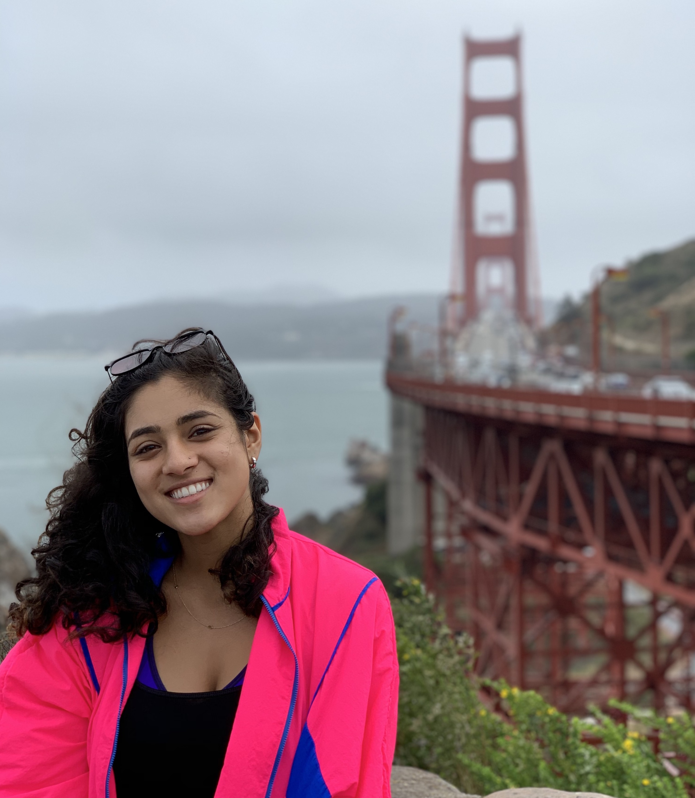

Hi friends!
I'm Priya (she/they) - pronounced pree-yuh - and I live on the unceded territories of the
Ramaytush Ohlone
people,
also known as San Francisco. I spend a lot of time thinking about
public interest technology, civic engagement, and community building.
Public Interest Tech
"Public interest tech" (aka PIT) is a term I discovered senior year at Stanford. To make
this field more accessible to students and graduates, I worked with the Haas Center for
Public Service to develop events,
panels, a careers newsletter,
resource guides, and
10 summer and post-graduate fellowships in PIT.
After graduating, I worked at
Remix, where I built transit planning tools
for
local government agencies. Now, I am a product engineer at Rewired,
a worker-owned cooperative building organizing technology for electoral campaigns, unions, and
organizations. I hope to see roles in
public interest tech become more accessible as we break up big tech, abolish the tech surveillance
state, and
shift the tide in how technology is used, ensuring that innovation uplifts all citizens rather than the
privileged few.
Civic Engagement
Whether I'm giving public comment at a city council meeting or door-knocking with Defund SFPD,
I frequently seek opportunities to be civically engaged. Leading up to the 2020 election, I was a
founding
organizer
for the Voter Empowerment
Project, a data fellow for Marquita Bradshaw's campaign for US Senate - TN, and a poll watcher
at the largest voting center in Phoenix, Arizona.
Community Building
Community is what enriches and sustains me. I find community at SF Adavu dance meet-ups (follow us on
Insta!), Stanford's
Center for South Asia (3rd person South Asian Studies minor), and
Resource Generation (a group of
young folks advocating for wealth redistribution).
I enjoy cultivating and investing in my communities as well. During Covid,
I co-founded mutual aid org LA Helping Hands. Soon after, our friends in
Santa Clara,
New Jersey, and
Seattle expanded our mission and
created Helping Hands branches of their own. LA Helping Hands merged with
AllTogether LA last fall, and our collective
network now
surpasses 1,300 people.
Currently, I'm also working with some friends on a podcast club and a resource
newsletter for early-career folks
interested in public interest tech.

Speaking
- Center for South Asia podcast: Meet Stanford
South Asia Minor Students!
- Ethics, Society, & Technology Unconference:
Public Interest Tech Career Workshop
- Stanford Careers in Public Interest Tech:
Alumni Panelist
- Impact Summit 2020 Ted Talk: Navigating Early-Career
Pathways in Public Interest Tech
- UT Austin Texas Civic Tech Project Guest Speaker